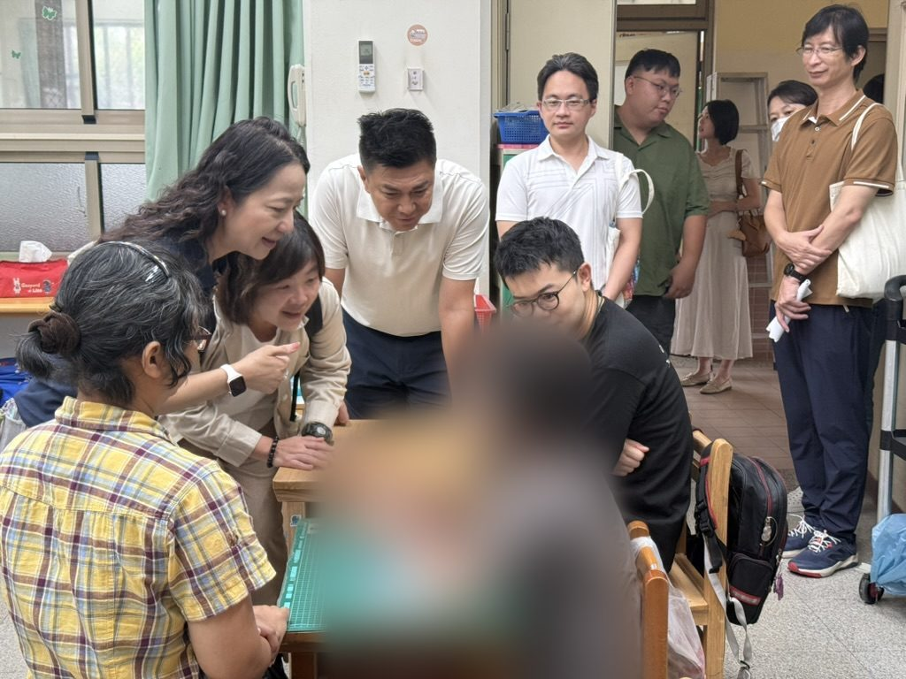

背景與說明
重症失能與多重障礙的特殊教育學生，在日常求學過程中面臨極大挑戰。部分學童需要抽痰、導尿等侵入性醫療輔助照護，普通校園醫護人力難以全面兼顧；同時，搭乘復康巴士跨區就學的交通費用高昂，以往每月僅數百至千元定額補貼，往往讓特教家庭承受巨大的經濟與照顧壓力，校園亦面臨助理員人力不足的窘境。
在陳慧文持續奔走爭取下，市府各項支持措施具體落地：教育局核定增置2名約聘專案護理師進駐成功特教與高雄特教學校，並開放各校依需求申請專案時薪特教助理員；更自114學年度第2學期起，將4所特教學校重症搭乘復康巴士學生的交通補助全面改採覈實補助，給予特教家庭最實質溫暖的後盾。


推動歷程
重要進度
主持重症學童就學困境公聽會
陳慧文邀集教育、衛生、交通、社會局處與家長團體召開公聽會，聚焦醫療輔助照護與交通接送瓶頸。
市政總質詢爭取專案人力與交通補助
陳慧文質詢市府團隊，要求增設特教專案護理人力、開放時薪助理員申請並提高交通補助上限。
特教學校專案護理師甄選錄取
成功特殊教育學校與高雄特殊教育學校完成專案護理師甄選，正式進駐校園提供專業醫療照護。
重症學生復康巴士改採覈實補助